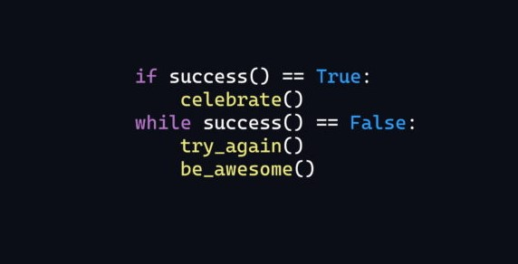

Sobre Mim
Me chamo Thiago Bellini Barros Mauricio, sou apaixonado por programação, tecnologia e tudo que está relacionado a essa área incrível. Atualmente estou cursando Análise e desnvolvimento de sistemas, que era o meu sonho desde quando eu era criança. Meus hobbes são: tocar instrumentos musicais, ler, assistir filmes e séries, estudar programação e música
